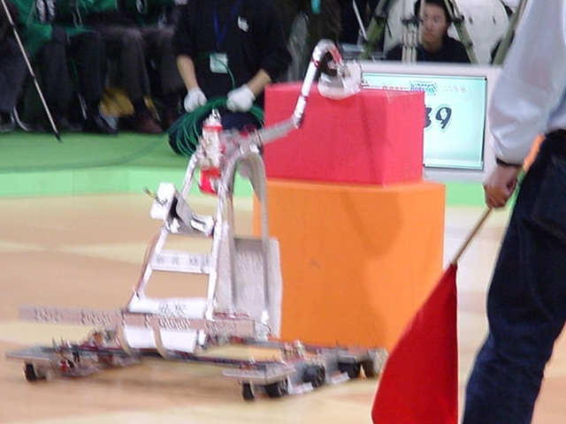
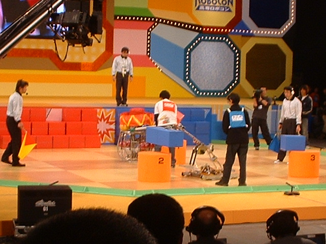

SCIENCE CLUB
マシン名：逆鱗
全貌、東北大会の準決勝直前。
02年度の科学部製作マシンの名前は「逆鱗」
前年度のNEPの対応妨害行為への激しい怒りに由来します。
競技ゾーンより1m高いスタートゾーンから降り、
３つのスポットに箱を積むというルールの大会でした。
マシンの特徴は、スタートゾーンから3m/sの速さで勢いをつけて降りるスタートダッシュや、
「防害」マシンというコンセプトにより、
仮想重量発生装置やアームなどを搭載している点。
地区大会後に行われたマシン改良(フルモデルチェンジ)では、
新たにアーム伸縮機能が搭載されたり、駆動系が強化されたりしました。
また、回路も注目すべき点。
難しいことは分かりませんが担当者は特に毎日（毎朝？）遅くまで頑張っていました。
結果は、東北大会優勝、全国大会出場（ベスト１６入り）でした。
シードにより２回戦から出場、床に傷つけてしまって得点していながらも判定負け。
全国大会で改良された部分がお見せできなかったのが残念‥‥
応援してくれたみなさん、ありがとうございました。
|  |  |
吸盤で箱を取り込み得点 |
全国大会の画像 |
リストに戻る